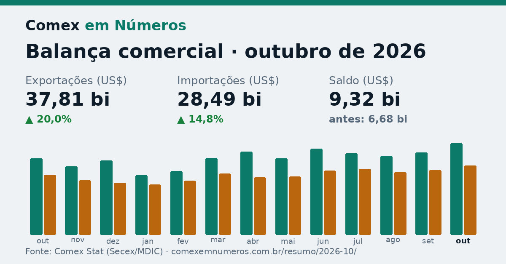

Resumo do mês · outubro de 2026
Exportações sobem 20,0% em outubro e saldo chega a US$ 9,32 bi

O Brasil exportou US$ 37,81 bi em outubro de 2026, alta de 20,0% sobre outubro do ano passado. O maior impulso veio de petróleo bruto (+US$ 4,70 bi, 75% da variação total). No sentido contrário, caiu minério de ferro (−US$ 809 mi).
O Brasil importou US$ 28,49 bi em outubro de 2026, alta de 14,8% sobre outubro do ano passado. O maior impulso veio de derivados de petróleo (diesel, gasolina) (+US$ 1,59 bi, 43% da variação total). No sentido contrário, caiu turbinas a gás e turborreatores (−US$ 970 mi).
Exportações →37,81 US$ bi▲ 20,0%Importações →28,49 US$ bi▲ 14,8%
Saldo9,32 US$ biantes 6,68
Corrente de comércio66,30 US$ bi▲ 17,7%
Exportações que mais subiram
| Produto | Out/26 | Diferença | |
|---|---|---|---|
| 1 | Petróleo brutoSH4 2709 · ▲ 122,6% · antes US$ 3,84 bi | US$ 8,54 bi | +4,70 bi |
| 2 | Derivados de petróleo (diesel, gasolina)SH4 2710 · ▲ 164,7% · antes US$ 684 mi | US$ 1,81 bi | +1,13 bi |
| 3 | SorgoSH4 1007 · ▲ 23.214% · antes US$ 1,5 mi | US$ 338 mi | +337 mi |
| 4 | Farelo de sojaSH4 2304 · ▲ 40,3% · antes US$ 702 mi | US$ 985 mi | +283 mi |
| 5 | SojaSH4 1201 · ▲ 8,9% · antes US$ 2,88 bi | US$ 3,14 bi | +257 mi |
Exportações que mais caíram
| Produto | Out/26 | Diferença | |
|---|---|---|---|
| 1 | Minério de ferroSH4 2601 · ▼ 27,6% · antes US$ 2,93 bi | US$ 2,12 bi | −809 mi |
| 2 | Carne bovina congeladaSH4 0202 · ▼ 33,6% · antes US$ 1,58 bi | US$ 1,05 bi | −530 mi |
| 3 | AçúcarSH4 1701 · ▼ 27,6% · antes US$ 1,64 bi | US$ 1,19 bi | −451 mi |
| 4 | Máquinas industriais diversasSH4 8479 · ▼ 86,6% · antes US$ 312 mi | US$ 41,9 mi | −270 mi |
| 5 | Sucos de frutasSH4 2009 · ▼ 52,7% · antes US$ 313 mi | US$ 148 mi | −165 mi |
Importações que mais subiram
| Produto | Out/26 | Diferença | |
|---|---|---|---|
| 1 | Derivados de petróleo (diesel, gasolina)SH4 2710 · ▲ 108,4% · antes US$ 1,47 bi | US$ 3,05 bi | +1,59 bi |
| 2 | AutomóveisSH4 8703 · ▲ 95,5% · antes US$ 601 mi | US$ 1,18 bi | +574 mi |
| 3 | Petróleo brutoSH4 2709 · ▲ 75,5% · antes US$ 554 mi | US$ 972 mi | +418 mi |
| 4 | Chips (circuitos integrados)SH4 8542 · ▲ 57,2% · antes US$ 458 mi | US$ 720 mi | +262 mi |
| 5 | Geradores elétricosSH4 8502 · ▲ 1.523% · antes US$ 15,0 mi | US$ 243 mi | +228 mi |
Importações que mais caíram
| Produto | Out/26 | Diferença | |
|---|---|---|---|
| 1 | Turbinas a gás e turborreatoresSH4 8411 · ▼ 80,9% · antes US$ 1,20 bi | US$ 229 mi | −970 mi |
| 2 | Defensivos agrícolas (inseticidas, herbicidas, fungicidas)SH4 3808 · ▼ 27,7% · antes US$ 592 mi | US$ 428 mi | −164 mi |
| 3 | Adubos mistos (NPK e fosfatados)SH4 3105 · ▼ 31,5% · antes US$ 472 mi | US$ 323 mi | −149 mi |
| 4 | Celulares e equipamentos de telecomunicaçãoSH4 8517 · ▼ 23,1% · antes US$ 484 mi | US$ 372 mi | −111 mi |
| 5 | Semicondutores e células solaresSH4 8541 · ▼ 36,5% · antes US$ 220 mi | US$ 140 mi | −80,4 mi |
Principais destinos
| País | Out/26 | Var. | |
|---|---|---|---|
| 1 | China22,7% do total | US$ 8,59 bi | ▼ 5,3% |
| 2 | Estados Unidos11,4% do total | US$ 4,32 bi | ▲ 87,0% |
| 3 | Países Baixos (Holanda)4,8% do total | US$ 1,81 bi | ▲ 63,1% |
| 4 | Argentina4,0% do total | US$ 1,53 bi | ▼ 6,7% |
| 5 | Índia4,0% do total | US$ 1,50 bi | ▲ 67,9% |
Estados que mais exportaram
| Estado | Out/26 | Var. | |
|---|---|---|---|
| 1 | Rio de Janeiro18,7% do total | US$ 7,08 bi | ▲ 60,6% |
| 2 | São Paulo17,9% do total | US$ 6,78 bi | ▲ 8,5% |
| 3 | Minas Gerais10,2% do total | US$ 3,87 bi | ▼ 10,9% |
| 4 | Rio Grande do Sul6,7% do total | US$ 2,53 bi | ▲ 15,4% |
| 5 | Mato Grosso6,6% do total | US$ 2,51 bi | ▼ 0,6% |
Compartilhe este resumo
Texto pronto para LinkedIn, WhatsApp ou e-mail.